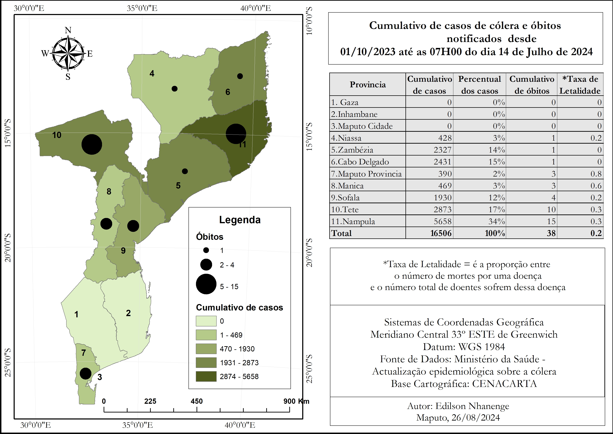
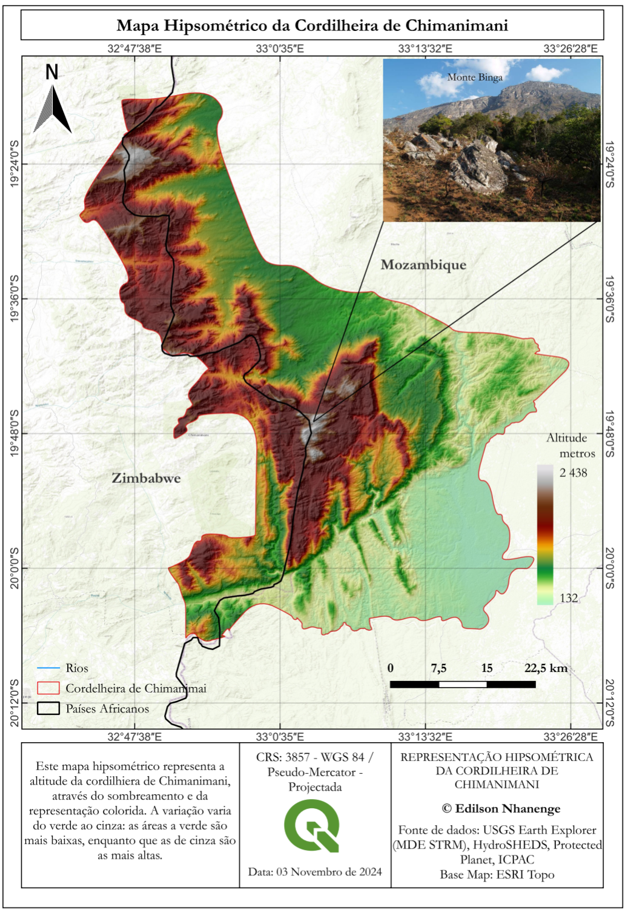
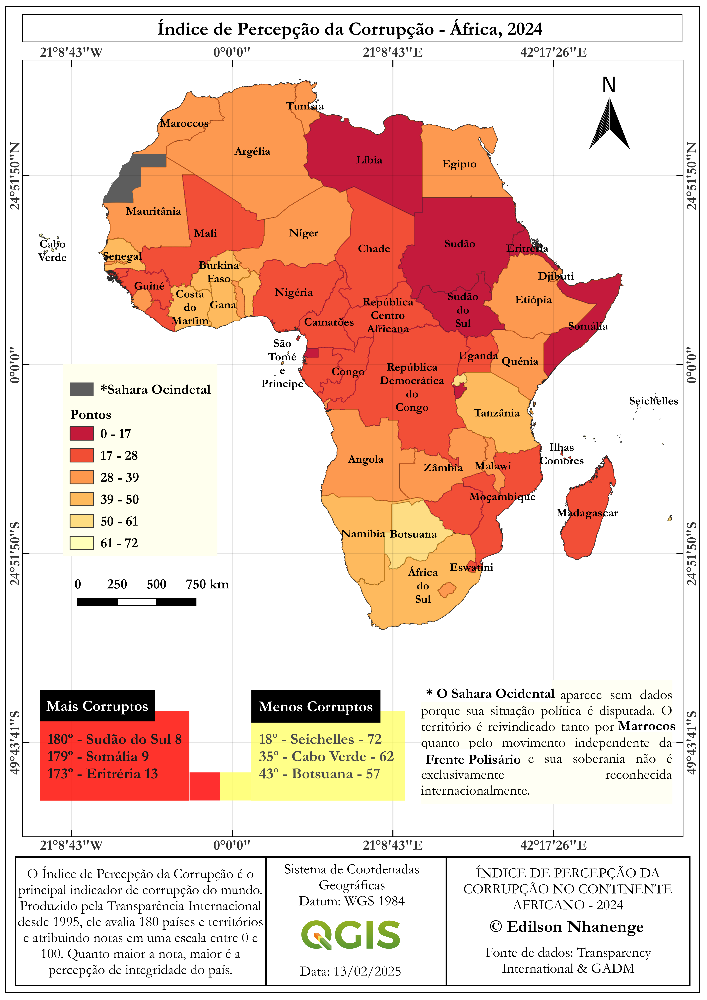
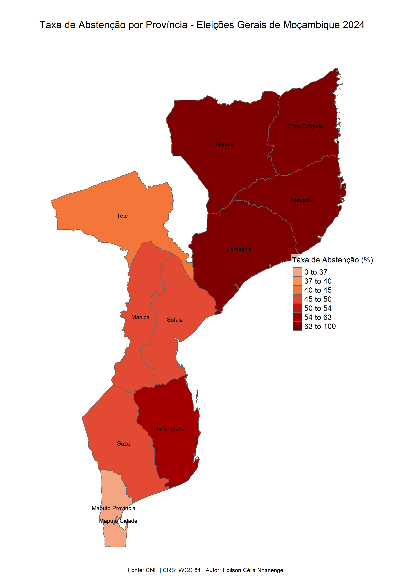
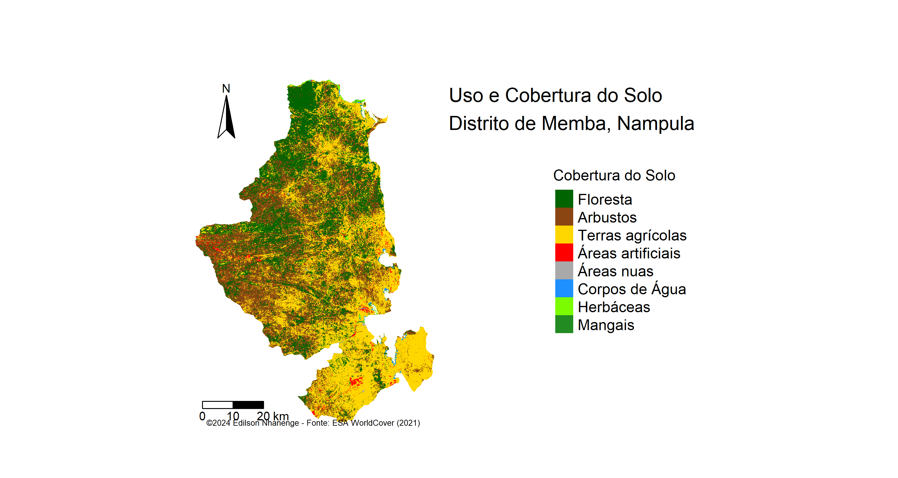

Edilson Célia Nhanenge

Consultor em Geoinformação e Engenheiro Geomático
Consultor em Geoinformação e Engenheiro Geomático

Consultor em Geoinformação, com vasta experiência em Sistemas de Informação Geográfica (SIG), análise geoespacial, mapeamento, cadastro de terras, conservação ambiental e levantamento topográfico.
Minha expertise inclui áreas como Hidrografia e Fotogrametria. Possuo domínio avançado em ferramentas de geoprocessamento, como QGIS, ArcGIS Pro e Google Earth. Além disso, sou proficiente no uso de ferramentas para coleta e análise de dados, como Kobo Toolbox, Microsoft Excel e R-Studio.
Tenho actuado em projectos governamentais, investigativos e comunitários, contribuindo para o desenvolvimento sustentável por meio da Geoinformação.
Sou apaixonado pela conservação da biodiversidade, pelo desenvolvimento sustentável e pela inovação tecnológica. Aliado a habilidades de liderança, coordenação, trabalho em equipe e sensibilização, mantenho-me comprometido com o aprendizado contínuo.
Descrição: Levantamento topográfico de mais de 2000 parcelas para cadastro de terras comunitárias.
Sensibilização de comunidades sobre gestão sustentável de recursos, garantido o alinhamento com os objectivos do projecto RDUAT.
Ferramentas Utilizadas: QGIS, receptores de GNSS e KoboToolbox.
Resultados: Este trabalho resultou na atribuição de mais de 2000 títulos de Direito de Uso e Aproveitamento de Terras (DUAT).

Descrição: Como Analista de GIS, realizei o mapeamento de mais de 30 comunidades nas províncias de Manica e Sofala. Este trabalho envolveu levantamento de dados de campo, processamento de informações geoespaciais e criação de mapas temáticos.
Ferramentas Utilizadas: ArcGIS Pro, QGIS, GPS de alta precisão, Estação Total.
Resultados: Mapas detalhados que subsidiaram planos comunitários de gestão de recursos e desenvolvimento sustentável. E relatórios e Agendas de Desenvolvimento Comunitária.
Por ocasião do dia Internacional dos SIG (GISDay_2024) que é celebrado na segunda semana de Novembro, decide realizar uma análise detalhada da distribuição hidrográfica em Moçambique.
Nste mapa da hidrografia de Moçambique as hierarquias dos rios são representadas em detalhes.
 Baixar Documento
Baixar Documento
Este projecto avalia as mudanças na cobertura vegetal da província de Niassa entre os anos 2012 e 2024, utlizando o Índice de Vegetação por Diferença Normalizada.
Os dados analisados, fornecidos pelo U.S Geological Survey (USGS), revelam áreas de perda significativa de Vegetação, provavelmente associadas a actividades humanas e mudanças climáticas, mas também áreas de recuperação vegetal, evidenciando esforços de conservação e regeneração.
Um ponto de destaque é a Reserva Especial do Niassa, que, embora possui importantes ecossistemas, também foi afectada por perdas de Vegetação em algumas áreas, reforçando a necessidade de fortalecer as estratégias de conservação para mitigar os impactos e garantir a preservação deste patrimônio natural.
Os mapas e gráficos apresentados permitem uma visão integrada das mudanças ambientais, destacando a importância dos SIG no monitoramento de recursos naturais e no suporte à tomada de decisão sustentável.
 Baixar Documento
Baixar Documento
Através da Cartografia e dos Sistemas de Informação Geográfica (SIG), foi possível visualizar padrões de abstenção, voto brancos e votos nulos ao longo do tempo nas diversas províncias de Moçambique.
Este trabalho evidencia como a alienção eleitoral, caracterizada pela falta de envolvimento dos eleitores, pode ser monitorada e compreendida através do uso de tecnologias de geoprocessamento e mapas temáticos.
 Baixar Documento
Baixar Documento
Este mapa apresenta a distribuição espacial dos casos de cólera e óbitos notificados em Moçambique entre 1º de Outubro de 2023 e 14 de Julho de 2024.
Os Sistemas de Informação Geográfica (SIG) desempenham um papel fundamental na criação de ferramentas como esta, que nos permitem visualizar, analisar e compreender a gravidade e a disseminação da doença em diferentes regiões do país.
Através dos SIG, podemos identificar padrões críticos e direcionar de maneira eficaz os esforços e recursos para as áreas mais afectadas.
Agradecemos a todos os profissionais de saúde e não só por seu trabalho contínuo e essencial no enfrentamento desse desafio de saúde pública.
 Baixar DocumentoA Cordilheira de Chimanimani é uma região montanhosa de importância ambiental e geográfica que se estende entre Moçambique e Zimbábue.
Este mapa foi produzido utlizando dados de Modelo Digital de Elevação (MDE) e técnicas de geoprocessamento no QGIS. Este trabalho destaca a complexidade topográfica da Cordilheira, capturando as variações de altitude em detalhes impressionantes.
 Baixar DocumentoA corrupção continua sendo um dos maiores desafios para o desenvolvimento sustentável no continete Africano. Utilizando dados da Transparência Internacional, elaborei este mapa que representa a percepção da corrupção em África em 2024.
O mapa é uma ferramenta valiosa para analisar padrões regionais e apoiar estratégias de mitigação da corrupção.
 Baixar DocumentoEste foi primeiro projecto utilizando a linguagem R. Para a materialização deste projecto pôs em prática técnicas obtidas ao longo do curso de análise de dados em linguagem R.
O R é uma ferramenta importante na análise de dados, pois permite automatizar diversas tarefas,além disso é uma linguagem de programação de código aberto e fácil manipulação.
O script usado na elaboração deste mapa pode ser visualizado na minha pagina do Github através do link: https://gist.github.com/Nhanenge/47a8be244d0ded0d8f42732db74f43fb
 Baixar DocumentoO segundo mapa produzido em R, destaca a dinâmica de uso e cobertura do solo no distrito de Memba.
Este trabalho foi realizado com os dados do European Space Agency - ESA_WorldCover (2021) , uma fonte indispensável para análises espaciais, que permite compreender e monitorar as mudanças no uso da terra em escala global.
O script usado na elaboração deste mapa pode ser visualizado na minha pagina do Github através do link: https://gist.github.com/Nhanenge/708ac3fcd151e5f94318f07831e7a6a3
 Baixar DocumentoLicenciatura em Ciências de Informação Geográfica (2024)
Universidade Eduardo Mondlane
Entre em contacto pelos números: